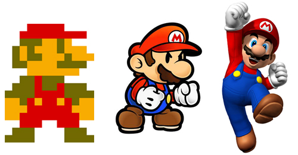

Optimize Your Javascript
about:thatguy
var name = "Nicolas B. Pierron";
var ircName = "nbp";
var work = "SpiderMonkey Hacker";
var workplace = "Monkey Island";
var outsideMozillaActivites = " \
runs his own Linux distribution, \
uses git instead of mercurial and \
tries to make funny presentation … \
… without success.";
var faq = "Why B ?";
about:presentation
- Overview of performance issues.
- Explanation of some optimizations.
- Nice examples.
- Work best (only) in Firefox.
Feel free to ask questions at any time.
about:context
About Javascript:
- Different engines. (SpiderMonkey, v8, JSC, …)
- Translated to machine code at runtime.
About SpiderMonkey features:
- Bytecode interpreter.
- Type Inference.
- Jäeger Monkey Compiler.
- IonMonkey Compiler.
Javascript is Fast
Except with
- Reflows & Repaints
- Bad timing
- GCs
- Bad algorithms
- Dynamic features
Reflows & Repaints
Triggered by the
Modification of displayed DOM elements.
var x = document.getElementById("foo");
x.style.color = "#420"; // Repaint
x.style.width = '420px'; // Reflow
Right on Time
Different way of timing:
Radius : Frame time Angle : Repaint phase shift
- setTimeout — Not stable.
- setInterval — Stable, not synced with repaints.
- requestAnimationFrame — Stable and synced.
Loading Time
Prefer the DOM, instead of Libraries:
<script src="jquery.min.js"></script>
<script>
$(window).load(function () {
$('#id').click(function () {
alert("Stop it!");
})
})
</script>
window.onload = function () {
document.getElementById('id')
.onclick = function () {
alert("Oh Yeah! \o/");
};
}
Embedded & Standardized & Optimized
Algorithms

Fast & Approximated vs.
Realist & Slow
With
With: Lookup properties as-if it was a variable.
- Not with indexed properties.
- Forbid JIT compilation.
var b = 1;
var o = { 0: "zero", a: 0, b: 0 };
with (o) { a }; // = 0
with (o) { b }; // = 0
with (o) { 0 }; // = 0
var b = 1;
var o = { 0: "zero", a: 0, b: 0 };
o['a']; /* = 0 */
b; /* = 1 */ o['b']; /* = 1 */
0; /* = 0 */ o[0]; /* = "zero" */
Eval
Parse & Run & Modify the local scope.
- Short lifetime.
- Modify local variables.
- Forbid JIT compilation.
var style = eval("elem.style." + p);
eval(" \
var b = 0; \
while(" + a + " != b) { \
foo(b); ++b; \
}");
var object = eval(json);
var style = elem.style[property];
var fun = new Function( // still slow.
"var b = 0; \
while(" + a + " != b) { \
foo(b); ++b; \
}");
fun();
var object = JSON.parse(json);
Try-With-Eval Combo
try {
with (obj) {
x = eval(property);
};
} catch (var e) { … }
Are you scared now ?
if (property in obj) {
x = obj[property];
} else { … }
Better now ?
Just-In-Time
- Type Inference.
- Deoptimization.
- Double vs. Int.
- Typed Arrays.
- Meta.
Better Typed
What do the following code doing:
a + b
- Number Addition
- String Concatenation
- Play a CSS animation
Optimistic Typing
Deduced writes > Observed reads implies barriers
Deduced writes == Observed reads implies no barriers
Deoptimizations
Causes:
- New observed type.
- New infered type.
- Overflow. (Int to Double)
- Imposible representations. (NaN, Infinity, -0)
- etc …
Resume in the interpreter.
Int Operations
Intensive computation:
- Remove some overflow checks.
- Enforce signed ints:
|, &, ^, >>, <<
- Enforce unsigned ints:
>>>
Additions: b + c | 0
Multiplication: …
Int Operations
Additions: b + c | 0
Multiplication: not b * c | 0, but
function mul32(a, b) {
var a32 = a | 0, b32 = b | 0,
alo = a & 0xffff,
ahi = a32 - alo | 0,
rlo = alo * b32 | 0;
rhi = ahi * b32 | 0;
return rhi + rlo | 0;
}
Meta: JIT in JS
Useful use of new Function
- Code generation
- Deforestation
function l_Map(l_arr, l_fun) {
this.arr = l_arr;
this.fun = l_fun;
}
// map f · map g == map (f · g)
l_Map.prototype.run = function () {
var arr = l_arr.run();
var res = l_Array();
for (var i = 0; i != arr.length; ++i)
res.push(l_fun(arr[i]).run());
return res;
}
l_Map.prototype.run = function () {
if (l_arr instanceof l_Map && …) {
var fold = /* map (f · g) */;
this.run = function () {
return fold.run();
}
return run();
}
…
Conclusion
“You write some nice looking stuff, and then hope that the magic happens” — dvander
Links: Reflows & Repaints